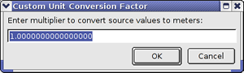
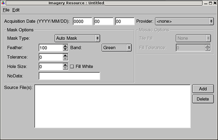
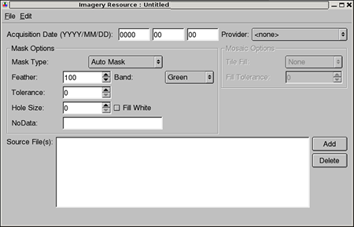
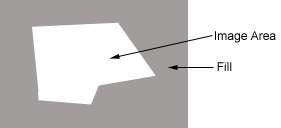
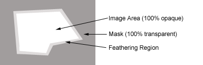
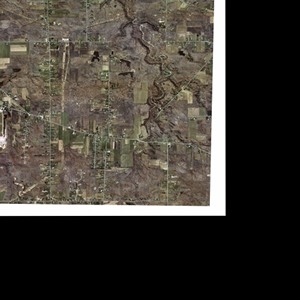
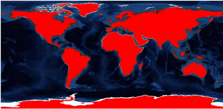
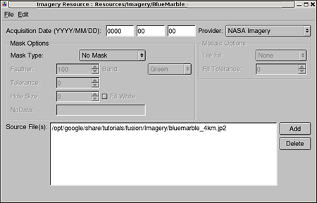

This chapter describes key concepts related to importing imagery, terrain, and vector source data to define resources in Google Earth Enterprise Fusion. It describes all of the tasks related to creating, modifying, organizing, and managing resources. For information about building resources and other assets, see the chapter titled Building Assets.
You first import your source data into Google Earth Enterprise Fusion as a resource. There is a one-to-one correspondence between the type of source file and the type of resource that is created from it:
You can create a single resource from a single source file, or you can create a single resource from many different source files. See Defining Resources for more information.
Providers often split large source files into several smaller source files to make them more acceptable to download. The main purpose of grouping multiple source files into a single resource in Google Earth Enterprise Fusion is to return source files that were split up for artificial reasons (such as file size) to their original state as a single entity. For example, you might acquire four source files that together comprise a large single data set, such as an image of the state of Texas. You combine all four source files into a single resource to put the original data back together.
When you combine source files in a single resource, the source files must be of the same type (imagery, terrain, or vector). In addition, they must be similar in other ways.
An important difference between vector resources and raster (imagery and terrain) resources is that the display rules for vector data can differ between projects. You can use different colors, icons, and filters for the same resource in different projects. With raster resources, however, most of the display settings are specified when you first import the imagery or terrain resource. These settings “stick” with the resource, regardless of which project is using it.
The following tables list the raster data (imagery and terrain) file formats and the vector file formats that are supported by Google Earth Enterprise Fusion.
All raster (imagery and terrain) data must have geographic coordinates and projection information included in the file headers or contained in external text-based world files and projection files. All imagery data must be in 8-bit format with either one band for panchromatic or three bands for color. All terrain data can be in 16-bit or 32-bit format with a single band.
| File Format | Notes |
|---|---|
| DTED | |
| Erdas Imagine (IMG) | |
| GeoTIFF | |
| GIF | Geographic coordinates and projection information must be accompanied by external world and projection files. |
| JPEG | Geographic coordinates and projection information must be accompanied by external world and projection files. |
| JPEG2000 | |
| Microstation (DGN) | Microstation DGN files from prior to version 8 are supported. Versions 8 and later are not supported. |
| MrSID | |
| NITF | |
| PNG | Geographic coordinates and projection information must be accompanied by external world and projection files. |
| TAB | |
| TIF | Geographic coordinates and projection information must be accompanied by external world and projection files. |
| USGS ASCII DEM | |
| USGS SDTS DEM |
Note: Google Earth Enterprise Fusion does not allow you to import imagery resources larger than 80GB in raw size. (Raw size = number of pixels width * number of pixels height * 3.)
| File Format | Notes |
|---|---|
ESRI Shape File (.shp)
|
For each ESRI shape file you import into Google Earth Enterprise Fusion, one DBF and one SHX configuration file, each with the same name as the original and the appropriate extension (.dbf and .shx) must be located in the same folder. In addition, if there is any projection in the image, a PRJ file with the same name as the original file and the appropriate extension (.prj) must be located in the same folder. Other associated files you can include with each SHP file are SBN, SBX, CPG, and LYR. |
| Generic ASCII | Point data only in comma-separated values or tab-delimited text format. |
| KML/KMZ | |
MapInfo File (.tab)
|
|
| US Census Tiger Line Files |
All raster data imported into Google Earth Enterprise Fusion must include geographic coordinates as well as information about the projection used to create the data. The supported data projections are:
| Albers Equal-Area Conic | Lambert Azimuthal Equal Area | Polar Stereographic |
| Azimuthal Equidistant | Lambert Conic Conformal (1SP) | Polyconic |
| Cassini-Soldner | Lambert Conic Conformal (2SP) | Robinson |
| Cylindrical Equal Area | Lambert Conic Conformal (2SP Belgium) | Rosenmund Oblique Mercator |
| Eckert IV | Lambert Cylindrical Equal Area | Sinusoidal |
| Eckert VI | Mercator (1SP) | Stereographic |
| Equidistant Conic | Mercator (2SP) | Swiss Oblique Cylindrical |
| Equi-rectangular | Miller Cylindrical | Swiss Oblique Mercator |
| Gall Stereographic | Mollweide | Transverse Mercator |
| Gauss-Kruger | New Zealand Map Grid | Transverse Mercator (Modified Alaska) |
| Gnomonic | Oblique Mercator | Transverse Mercator (South Oriented) |
| Hotine Oblique Mercator | Oblique Stereographic | Tunisia Mining Grid |
| Laborde Oblique Mercator | Orthographic | Van der Grinten |
The GIS tool you use to create your source data generally embeds projection and geotransform information in your source data file. Sometimes, however, the GIS tool improperly encodes this information or leaves it out altogether. The result is that Google Earth Enterprise Fusion cannot properly locate your source data on the globe.
When the projection and geotransform information is missing or inaccurate, you can provide the required data in the form of auxiliary files to ensure that Google Earth Enterprise Fusion properly converts your data. The auxiliary files must have the same file name as the source file, be located in the same folder, and have the appropriate extension, such as:
.prj - Provides projection information
.tfw - Provides geo-transform information
In addition to the standard PRJ format (OpenGIS well known text), Google Earth Enterprise Fusion supports two other file formats for projection data:
EPSG:x where x is a valid EPSG projection number+proj=latlong +ellps=GRS80 +towgs84=-199.87,74.79,246.62The first step in preparing your GIS data for use in Google Earth Enterprise Fusion involves importing it into the Asset Manager. When you import source data using the Asset Manager, Google Earth Enterprise Fusion creates a resource that you can add into your projects. The Asset Manager is available both with shell commands entered at the command line and as part the Google Earth Enterprise Fusion GUI. For information on importing large batches of source data, see the Command Line Reference.
As you import more data into the Asset Manager, you create a collection of resources that can be used in different projects. When you create resources for use in Google Earth Enterprise Fusion projects, keep in mind the following:
In general, when you create a resource from vector data, you are setting metadata for that resource, such as the source date, provider, and character encoding. On the other hand, when you create a resource from imagery and terrain data, your settings also affect the display of the data itself, such as mask, fill values, and mosaic options. Settings that affect the display of vector data are defined in the project that contains the vector resource.
Each new resource creation command creates a single resource. If you select multiple source data files, you are creating a single resource that is a composite of multiple sources. The source imagery must have identical resolution.
On the other hand, if you want to import several source files where each one is created as a single resource, you must issue a separate New command for each source file you want to import. Refer to the Command Line Reference for information on how to use batch commands for adding source data.
Typically, vector resources are created from multiple sources when you have contiguous data of the same type. For example, you can create a single resource that displays all of the zip code boundaries for a state by importing several vector files that each contain the zip code boundaries for a specific county. When combining vector source files in this manner, the data itself must have the same projection, and the attribute headers must match in order for the import to be successful.
For imagery data, large images are frequently cut in to smaller pieces, so each piece fits on a single CD. When you use data in this format, you must add all of the imagery source files to a single resource, rather than creating a separate resource for each source file.
Note: Recombining multiple imagery source files that were created by artificially splitting a large image is the only intended use for this process. It is not a general purpose, multi-resolution mosaic tool.
You can create a new resource only if a resource of that name/type does not already exist in the target folder. However, because imagery, terrain, and vector resources have different file extensions, you can use the same file name once for each type of resource.
Note: Because resources can be flagged as hidden so that they don’t appear in the Asset Manager, be aware that a name for a resource you create might be used by a hidden resource. Select the Show hidden resources check box before creating new resources if you have many hidden resources in your tree.
Each resource is a separate entity from the source file or files. If you want to specify a different (or updated) source file for an existing resource, you use a different command. See Modifying Resources for more information.
Note: Certain characters in Fusion asset names caused problems with the Publisher and Server. Fusion prevents the creation and use of assets with invalid characters in their names. The following characters are no longer allowed in Fusion asset names:
& % ' \ " * = + ~ ` ? < > : ; and the space character
If any assets have a name containing any of the characters mentioned previously, rename the asset (and path) to a valid name that does not include and of those characters. This requires you to rebuild the assets, as well as the projects and databases that contain them.
The Fusion installer checks the current asset root (if any) to detect, and subsequently warn, if invalid asset names exists before installation will continue.
In cases where creating new copies of the assets requires too much effort or expensive rebuilding of resources, a script is available from Google Earth Enterprise Support that will rename the assets automatically. This script requires using great care, and that is why it is not run automatically.
When you acquire updated source data for a resource that is already included in a Google Earth Enterprise Fusion database, you can easily replace the old source data with the new source data. If the new source file has the same name as the old source file and you are not changing anything else, simply replace the old source file with the new source file on disk, and rebuild the database. The next time you publish the database, everything else remains the same except for the new source data.
 . The Vector Resource Editor appears.
. The Vector Resource Editor appears.The first time you save a new resource, the Save dialog appears. Navigate to the folder where you want to save the resource, provide a unique name for it, and click Save.
Caution: Assets can not be deleted once they are saved. They can be cleaned, so that they are no longer available to use in Google Earth Enterprise Fusion; see Cleaning Asset Versions in the Building Assets chapter for more information.
When you finish defining each resource, you can build it individually or build several resources at the same time; however, you must build a vector resource before you can include it in a project. See the Building Assets chapter for complete details.
You use the Vector Resource Editor to define the following properties:
The acquisition date appears in year-month-day format.
Note: You can decide whether to use the date you acquire the data, the date you import it into Google Earth Enterprise Fusion, or the actual date of the source image. Regardless of which method you use, it is best to adopt a consistent policy for all your resources to avoid confusion.
Click each section of the date and enter the values. Alternatively, you can use the right and left arrow keys to move among the three parts of the date.
Select the source provider from the Provider drop-down list. The provider identifies the source of the data and its copyright information in Google Earth EC.
Note: If you specify the same provider for multiple resources that end up appearing together in Google Earth EC, Google Earth EC is smart enough to display the provider’s name and copyright information only once.
The providers that appear on the list are defined in the Provider Manager. See the section on Managing Data Providers in the Setting Up Your Workspace chapter for more information.
If the field data in your vector resource has a particular encoding for characters, such as ISO8859-1, select the appropriate option, so your data is displayed correctly in Google Earth EC. If you do not select an encoding option, the character encoding defaults to ASCII (plain text).
Use this option if your source data contains multiple layers and you want to extract a specific layer from the data for your resource. If you leave this option set to 0 and your source data contains more than one layer, Google Earth Enterprise Fusion extracts the first layer of the source file to create the resource.
Note: In most cases, source vector data has only one layer; however, Tiger vector data can contain multiple layers. Because there is a one-to-one correspondence between a vector resource and a single vector source layer, resource creation from multi-layer source data must specify a layer.
If you are unsure which layer to indicate when creating a resource from multi-layer source data, you can open the vector source file in Preview pane to display all of the layers in the source data. Examine each layer, and select the appropriate layer to import.
Google Earth Enterprise Fusion interprets elevation in meters, so the default selection for this option is Meters.

Enter the multiplier for Google Earth Enterprise Fusion to use to convert the data to meters. For example, if the elevation is in yards, enter 0.9144. When you click OK, the number you enter here appears as the Elevation Units value.
Google Earth Enterprise Fusion imports polygon features as they are classified in the data set, so the default selection for this option is None. But if for some reason polygon features in the data set are classified incorrectly, you can apply force conversion.
Select force 2D to force conversion of 2.5D polygon features to 2D polygon features.
Select force 2.5D to force conversion of 2D polygon features to 2.5D polygon features.
Note: The 2.5D polygonal features are mainly used in “buildings” data sets. Fusion does an analysis of area of features during the vector resource import and based on the result of this analysis it can propose force converting to 2D for source data set originally classified as 2.5D polygonal resource. Information is reported in resource import log: “Found number of very large features classified as Polygon25D. Possibly the source data is classified incorrectly. Consider importing with --force2D".
By default, if there are bad features in a source file, Google Earth Enterprise Fusion fails to build the resource. The error log states that there are bad features. If you check the box next to Ignore Bad Features, Google Earth Enterprise Fusion ignores the bad features and builds the resource anyway.
By default, if there are invalid geometries in a source file Google Earth Enterprise Fusion detects and tries to fix them. It removes zero length edges and "spikes" in polygonal geometry. As a result of removing invalid geometries polygonal features may become degenerate (zero area polygon). The resource import log states that there are degenerate features and they are skipped. If you check the box next to Don't Fix Invalid Geometries, Google Earth Enterprise Fusion does not clean up invalid geometries and builds the resource anyway.
The Source Files list displays the names of the source files selected for this resource. Click Add to add a source file. See the next section, Adding a Source File to a Resource, for more information.
To delete a file on the Source Files list and no longer associate it with this resource, select the file and click Delete. A message prompts you to confirm the deletion. Click OK. The file no longer appears on the list.
Note: You can select one or more source files to create a single resource, such as an imagery mosaic or a vector composite. If you use more than one source data file for a single resource, all of the raster data must have the same projection and attribute values, and all of the vector data must be of the same type (lines, points, or polygons).
Each resource must contain at least one data source file. Perform the following procedure for each source file you want to add.
You can import KML or KMZ files created in Google Earth as resources in Google Earth Enterprise Fusion. There are a few limitations on the type of KML files that Google Earth Enterprise Fusion can import:
To import KML/KMZ files:
 . The Imagery Resource Editor appears.

. The Imagery Resource Editor appears.
The first time you save a new resource, the Save dialog appears. Navigate to the folder where you want to save the resource, provide a unique name for it, and click Save.
Caution: Assets can not be deleted once they are saved. They can be cleaned, so that they are no longer available to use in Google Earth Enterprise Fusion; see Cleaning Asset Versions in the Building Assets chapter for more information.
When you finish defining each resource, you can build it individually or build several resources at the same time. See the Building Assets chapter for complete details.
Use the Imagery Resource Editor to define the following properties:
The acquisition date appears in year-month-day format. This is required for historical imagery projects.
The date you set for the Imagery Acquisition Date is visible in the Google Earth Client when hovering the cursor over a tile. This requires that the imagery resource has acquisition dates recorded with it and requires a rebuild of the imagery project (since for this feature the date needs to be encoded in the JPEG tiles). Imagery and Vector Resource dialogs now support an improved acquistion date format: unspecified days and months are now supported, for example:
Google Earth Enterprise supports the creation and displaying of historical imagery that works just as the historical imagery in the Google Earth client.
Note: You can decide whether to use the date you acquire the data, the date you import it into Google Earth Enterprise Fusion, or the actual date of the source image. Regardless of which method you use, it is best to adopt a consistent policy for all your resources to avoid confusion.
Click each section of the date and enter the values. Alternatively, you can use the right and left arrow keys to move among the three parts of the date.
Select the source provider from the Provider drop-down list. The provider identifies the source of the data and its copyright information in Google Earth EC.
Note: If you specify the same provider for multiple resources that end up appearing together in Google Earth EC, Google Earth EC will display the provider’s name and copyright information only once.
The providers that appear on the list are defined in the Provider Manager. See Managing Data Providers in the Setting Up Your Workspace chapter for more information.
Tip: If you create a single resource from multiple source files that you received from multiple providers, you can create a special entry in the Provider Manager that gives credit to all providers who contributed to that resource. For example, if you combine source files from USGS and i3 into one resource, you can use the Provider Manager to create a special provider called USGS/i3. In the copyright field, you can enter Imagery © USGS 2005 and i3 2006. When you define the resource, select USGS/i3.
When image data is captured, certain areas contain unusable data. This unusable data is called fill, since it exists simply to fill out the rest of the tile or tiles. Fill data is usually true black (0,0,0), true white (255,255,255), or a value close to one of those two values.
Since the fill data contains no useful information, Google Earth Enterprise Fusion needs to mask the fill areas, allowing the underlying image layers (with usable data) to show through. You can create a mask for a given area yourself, or you can allow Google Earth Enterprise Fusion to create a mask for the fill area automatically. The Auto Mask feature is sufficient in most cases.
If you create a mask yourself, it must either be of the same file format as the original image file, or it must be a TIFF file. See Creating Custom Masks for more information.
If you select Auto Mask for an image, you can set some options to adjust the mask you create. The values you can adjust are described in the following sections.
Select the mask type from the Mask Type drop-down list.
In most situations, particularly when you are creating a mosaic from contiguous source imagery, the Auto Mask setting is the best choice. For example, if you have four square contiguous pieces of imagery that are bounded by land on all sides, you would likely select Auto Mask. The Auto Mask function automatically uses a fill value based on the colors in the four corners of the source imagery to create the mask.
If you select Auto Mask, you can set the following options:
The feathering value allows you to provide a smooth transition between the image (usable) data and the fill (unusable) data. You use the feathering option to define a blending region between the actual image and the transparent mask.
At the edge of the feather area closest to the image, 100 percent of the image area is visible. From this point to the edge of the mask, the transparency of the image increases and its opacity decreases. At the same time, the opacity of the mask increases and its transparency decreases. At the edge of the feather area closest to the mask, the image value is 100 percent transparent, and the underlying imagery shows through completely.
The default feather value is 100 pixels. If the default feather value results in masking out too much data, you can specify a lower value (that is, a narrower band of blending) and experiment with the results. However, if you specify a value that is too low, you could create sharp edges between insets, possibly even leaving black lines between insets. See Defining Terrain Resources for more information. See also the Tutorial for an example.
Use this option to indicate which channel to use when generating the mask (Red, Green, or Blue). Typically, green provides the best contrast between Earth data and no data and is, consequently, the default. However, some data works best when the blue channel is used for mask selection.
Tolerance specifies the color range for mask selection. The default tolerance is 0, which is adequate for many fill colors that are pure black or pure white. However, when data is compressed and uncompressed, it is sometimes modified slightly. Although these modifications are imperceptible to the human eye, a computer can detect them. A fill pixel with an original value of (0,0,0), for example, might decompress to a value of (0,1,0).
If you want to ignore slight variations in fill color values, you can specify a tolerance value, which represents the amount of variation from true black or true white that Google Earth Enterprise Fusion ignores when it creates the Auto Mask. Typically, a setting of 1 or 2 is adequate.
Use this option if you have fill regions inside the boundaries of your imagery data. The default setting for hole size is 0, which is off.
The hole size indicates the number of contiguous pixels Google Earth Enterprise Fusion uses when matching any color region inside your imagery with the same value specified as your fill. For example, if you set the Hole Size value to 100 and the imagery has a block of pixels that is 100 or more pixels in width or height with the same color as one of the corners (fill value), Google Earth Enterprise Fusion treats that area as a hole in the data and applies the mask to it. The end result is that whatever data is under the masked data shows through.
Be aware that if you use the hole-checking feature, there are trade-offs that can dramatically increase the time it takes to generate a mask, including:
Specifying an appropriate hole size involves some familiarity with the actual data.
Fill data is usually indicated by areas of black pixels, so the default fill color is black (0,0,0). If you know that the vendor has used white (255,255,255) as well as black as a fill color, be sure to check the Fill White box when you import the imagery. Checking this box allows both black and white to be considered as fill data when the Auto Mask is created. The following image is an example of source imagery with both black and white fill data.

Use this option to specify the pixel value for NoData in the terrain
data (the pixel values to include in the mask). Multiple values may be
specified in this field, including ranges (two numbers separated by a
colon ":") and individual values. For example,
-99999:0 is
the default which will mask any pixel value from -99999
through 0, inclusive.
The values -99999 and 0 alone, can be masked
by using -99999, 0 instead
of -99999:0. Alternatively,
‘-99999:-32768, 32768:999999’ means mask
pixel values -99999 through -32768 and
32768 through 999999.
Select Have Mask if you have a corresponding alpha mask or file for your source. (See Creating Custom Masks for details about creating your own custom masks.) Google Earth Enterprise Fusion automatically applies the mask file to the source file. The mask for your input must be located in the same folder as the source file, and the file name must match the name of the source file with -mask appended. For example, if your source file is called NewYork.tif, its mask file must be named NewYork-mask.tif.
You might select the Have Mask option in a situation where your source file imagery is bounded by water, and a significant portion of the image is water. In that case, you would likely create a mask by hand in order to preserve the high-resolution detail around your shoreline while masking the water imagery.
If you are creating a resource from multiple imagery source files, you cannot select Have Mask as the mask setting value.
Select No Mask only for base map imagery that extends to the entire database, such as the NASA Blue Marble imagery.
The simplest way to import source data is to create one resource from each data file. In some cases, though, it is actually necessary or just more efficient to import multiple source images into a single resource, called a mosaic. To create a mosaic, the source images must meet the following requirements:
Use the Mosaic Options area for setting the tile fill values and fill tolerance for fill areas of overlapping imagery tiles. These options are available only when you import more than one imagery file.
Note: This process of recombining images that were artificially split is the only intended use for combining multiple imagery source files into a single resource. It is not a general purpose, multi-resolution mosaic tool.
When there is an overlap between the tiles, the pixels in the top tile obscure the pixels in lower tiles. To expose the pixel beneath the top tile, you specify the color to make transparent.
Note: The Tile Fill setting makes the specified pixels transparent. Masking blocks the specified pixels. Both methods, however, define the pixels to be maintained and the pixels that show through.
For example:
Note: Google Earth Enterprise Fusion applies the Tile Fill setting and other mosaic-related settings to the imagery to create a single larger image before it applies the mask. Any fill value you set here has no impact on the mask you use for the entire image.
The tolerance setting functions just as it does for fill values on the Auto Mask. See Tolerance under the Auto Mask bullet above.
The Source Files list displays the names of the source files selected for this resource. Click Add to add a source file. See Adding a Source File to a Resource for more information.
Note: You can select one or more source files to create a single resource, such as an imagery mosaic or a vector composite. If you use more than one source data file for a single resource, all of the source data must have the same projection and attribute values.
Google Earth Enterprise Fusion does not allow you to import raw imagery source files larger than 80 GB. (Raw size = number of pixels width * number of pixels height * 3.) Therefore, if you have an imagery source file that is larger than 80GB, you can create two or more source files using the gesplitkhvr command. (See gesplitkhvr in the Command Line Reference chapter for details.)
 . The Terrain Resource Editor appears.
. The Terrain Resource Editor appears. The first time you save a new resource, the Save dialog appears. Navigate to the folder where you want to save the resource, provide a unique name for it, and click Save.
Caution: Assets can not be deleted once they are saved. They can be cleaned, so that they are no longer available to use in Google Earth Enterprise Fusion; see Cleaning Asset Versions in the Building Assets chapter for more information.
When you finish defining each resource, you can build it individually or build several resources at the same time.
Use the Terrain Resource Editor to define the following properties:
The acquisition date appears in year-month-day format.
Note: You can decide whether to use the date you acquire the data, the date you import it into Google Earth Enterprise Fusion, or the actual date of the source image. Regardless of which method you use, it is best to adopt a consistent policy for all your resources to avoid confusion.
Click each section of the date and enter the values. Alternatively, you can use the right and left arrow keys to move among the three parts of the date.
When terrain data is captured, certain areas contain unusable data. This unusable data is called fill, since it exists simply to fill out the rest of the tile or tiles.
Since the fill data contains no useful information, Google Earth Enterprise Fusion needs to mask the fill areas, allowing the underlying terrain layers (with usable data) to show through. You can create a mask for a given area yourself, or you can allow Google Earth Enterprise Fusion to create a mask for the fill area automatically. The Auto Mask feature is sufficient in most cases.
If you create a mask yourself, it must either be of the same file format as the original image file, or it must be a TIFF file. See Creating Custom Masks in the chapter titled Creating Your Own Source Data, Icons, and Masks for more information.
If you select Auto Mask for terrain data, you can set some options to adjust the mask you create. The values you can adjust are described in the following sections.
Select the mask type from the Mask Type drop-down list.
In most situations, particularly when you are creating a mosaic from contiguous terrain source data, the Auto Mask setting is the best choice. The Auto Mask function automatically uses a fill value based on the elevation value in the four corners of the source terrain to create the mask.
If you select Auto Mask, you can set the following options:
Feathering blends the edges of your terrain tile into adjacent areas for a smoother transition. The default feather value for Auto Mask is 100 pixels, but you can adjust it for a wider or narrower margin, if desired. See Defining Imagery Resources for more details about feathering.
Use this option if you have masked regions inside the boundaries of your terrain data. The default setting for hole size is 0, which is off. See Defining Imagery Resources for more details about hole size.
Use this option to specify the pixel value for NoData in the terrain
data (the pixel values to include in the mask). Multiple values
may be specified in this field, including ranges (two numbers separated
by a colon ":") and individual values. For example,
-99999:0 is
the default which will mask any pixel value from -99999 through 0, inclusive.
The values -99999 and 0 alone, can be masked
by using -99999, 0 instead
of -99999:0. Alternatively, ‘-99999:-32768, 32768:999999’ means mask
pixel values -99999 through -32768 and 32768 through 999999.
Select Have Mask if you have a corresponding alpha mask or file
for your source. Google Earth Enterprise Fusion automatically applies
the mask file to the source file. The mask for your input must be located
in the same folder as the source file, and the file name must match the
name of the source file with -mask appended. For example,
if your source file is called NewYork.tif, its mask file
must be named NewYork-mask.tif.
You might select the Have Mask option in a situation where your terrain data is bounded by water, and a significant portion of the terrain is water. In that case, you would likely create a mask by hand in order to avoid processing the water data.
If you are creating a resource from multiple terrain source files, you cannot select Have Mask as the mask setting value.
Select No Mask only for base map terrain that extends to the entire
database, such as the gtopo30_4km terrain data.
The simplest way to import source data is to create one resource from each data file. In some cases, though, it is actually necessary or just more efficient to import multiple source files into a single resource, called a mosaic. See Mosaic Options in Defining Imagery Resources for details.
When there is an overlap between the tiles, the pixels in the top tile obscure the elevation samples in lower tiles. To expose the elevation samples beneath the top tile, you specify the elevation value to make transparent.
Note: The Tile Fill setting makes the specified pixels transparent. Masking blocks the specified pixels. Both methods, however, define the pixels to be maintained and the pixels that show through.
For example:
Note: 1.Google Earth Enterprise Fusion applies the Tile Fill setting and other mosaic-related settings to the terrain to create a single larger image before it applies the mask. Any fill value you set here has no impact on the mask you use for the entire image.
The tolerance setting functions just as it does for fill values on the Auto Mask. The default tolerance is 0, which is adequate for most terrain data. However, you can adjust the tolerance to compensate for any possible loss in precision. Typically, a setting of 1 or 2 is the highest tolerance value required.
Google Earth Enterprise Fusion interprets elevation in meters, so the default selection for this option is Meters.
Enter the multiplier for Google Earth Enterprise Fusion to use when it converts the data to its metric equivalent. When you click OK, the number you enter here appears as the Elevation Units value.
The Source Files list displays the names of the source files selected for this resource. Click Add to add a source file. See Adding a Source File to a Resource for more information.
Note: You can select one or more source files to create a single resource, such as an terrain mosaic or a vector composite. If you use more than one source data file for a single resource, all of the source data must have the same projection and attribute values.
By using negative elevation resources, you can build elevation models for the world sea floors, lake beds, and below sea surface locations (Death Valley, CA) along with positive value terrain data for land masses. Properly importing negative elevation terrain requires additional data preparation, however, the end-to-end data workflow is the same for importing terrain resources and building terrain projects.
Previous versions of Fusion Pro would impose an artificial elevation floor value of 0 to any data sets with negative elevation values. This restriction was enforced because the Google Earth Enterprise Client (EC) could not display negative elevations. The Google Earth Enterprise Client software can display negative elevation models, as of version 5.0, and the Fusion artificial elevation ‘floor’ is no longer imposed. Data users can build terrain models with only positive values only – if no negative elevation terrain is available – or build terrain models with both positive and negative elevation data.
In the following example, a terrain project is built from the GTOPO world terrain dataset (1-kilometer resolution). It includes positive elevation values for land, a NoData value of -9999, a pixel value of 0 for the oceans and lakes, and a world-wide bathymetric terrain dataset with a NoData value of -9999 for all pixels out of the oceans and on the land. The entire globe has terrain coverage:

If you purchase preprocessed data from Google or receive preprocessed data from another Google Earth Enterprise Fusion user, it arrives as a complementary pair of folders. These folders share the same name but have different extensions. Folders with a .kip extension are imagery data. Folders with a .ktp extension are terrain data. Folders with a .kmp extension are mask files.
You must use the Google Earth Enterprise Fusion shell commands to add preprocessed data to your asset root. See Importing Preprocessed Resources in the Command Line Reference chapter for complete details.
After you create any type of resource, you can use the Asset Manager to modify it in any of the following ways:
Note: When you save a modified resource, Google Earth Enterprise Fusion replaces the old resource definition with the new one. When you build that new resource, Google Earth Enterprise Fusion creates a new version. When you select a resource to include in a project, it is always the latest version of the resource. However, your modifications to a resource have no effect on earlier versions of that resource that were previously built into a database.
The Resource Editor for that resource type displays all of the current settings.
See the section on defining Vector, Imagery, or Terrain resources for details about each option.
If one or more source files have changed since you last saved the resource, a message at the bottom of this dialog informs you that the original source files have changed on disk. You do not have to change anything to take advantage of the updated source files; Google Earth Enterprise Fusion automatically includes any updated source files when you save the resource.
Google Earth Enterprise Fusion saves the resource in the same place with the same name. If you have already built the resource, you must rebuild it after making changes.